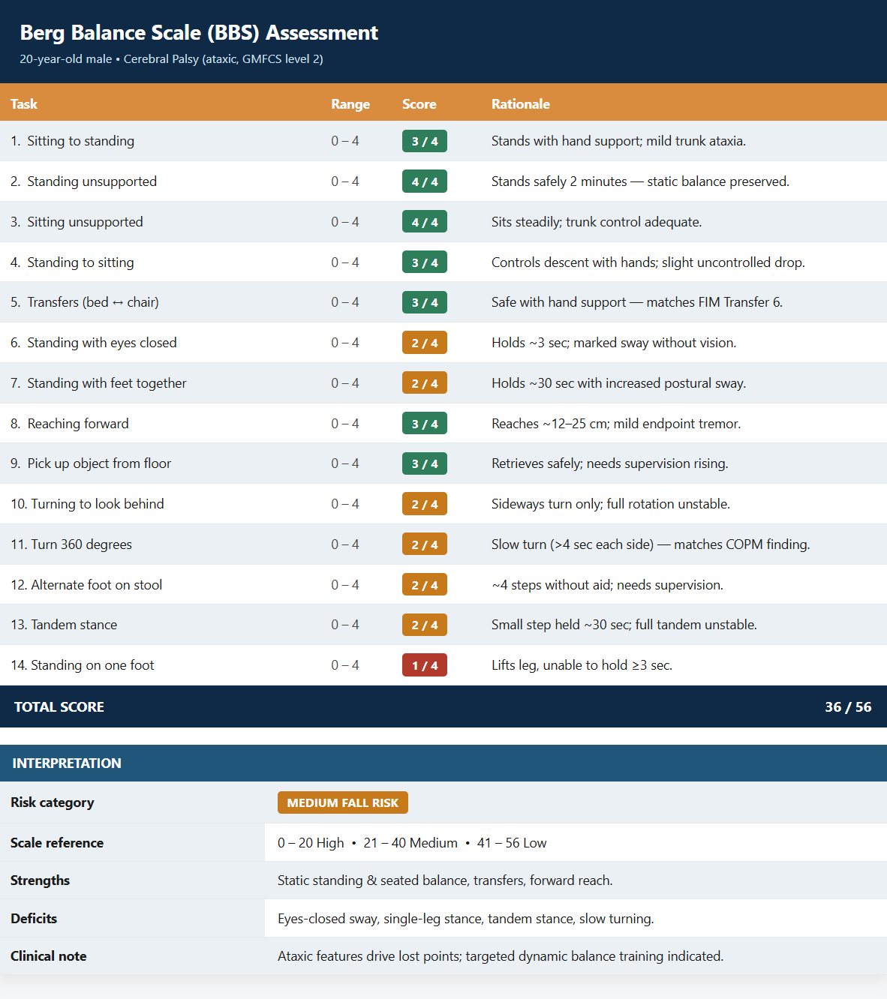

Therapeutic Frames of Reference
Neuro-Developmental Treatment (NDT)
https://ottheory.com/therapy-model/neuro-developmental-treatment-frame-reference
Biomechanical Frame of Reference
https://ottheory.com/therapy-model/biomechanical-frame-reference
Canadian Occupational Performance Measure (COPM)
https://www.thecopm.ca/about/
Neuroanatomy, Somatosensory Control
https://www.ncbi.nlm.nih.gov/books/NBK538147/
Motor Learning and Control Principles
https://pubmed.ncbi.nlm.nih.gov/23982325/
Motor Control: Translating Research into Clinical Practice
https://www.lww.com/Motor-Control-Translating-Research-into-Clinical-Practice/p/9781496311859
Journal Study: Therapeutic Intervention Research
https://doi.org/10.3109/01942638.2011.653614
Journal Study: Developmental Medicine & Child Neurology
https://doi.org/10.1111/j.1469-8749.2007.00494.x
